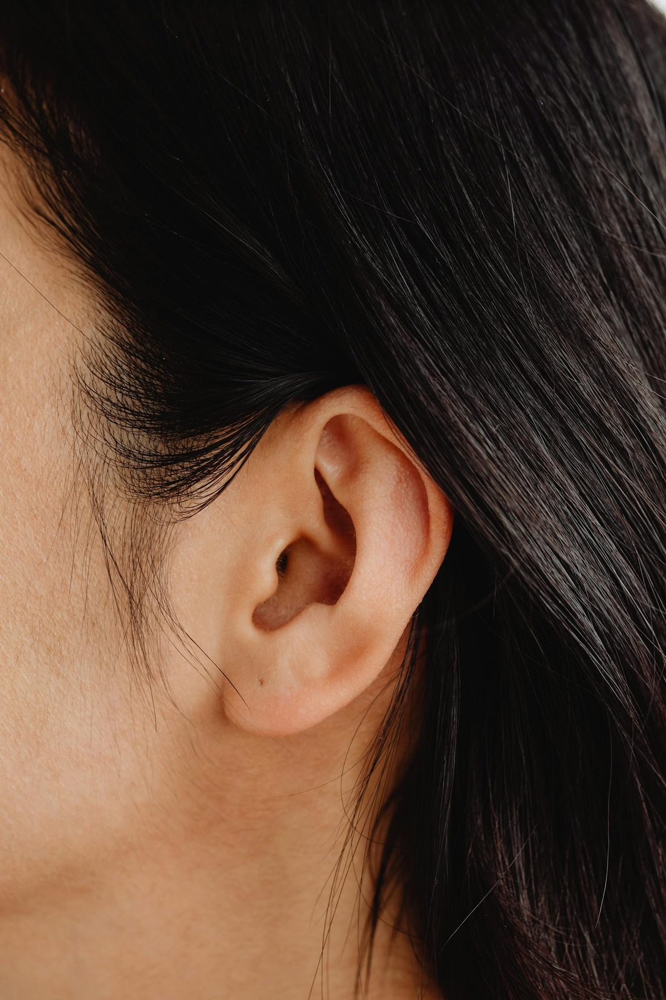
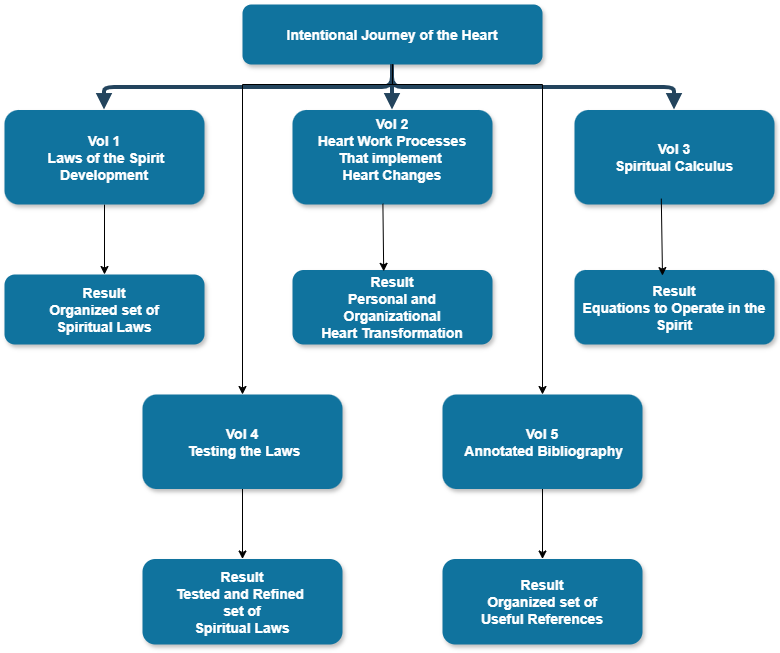
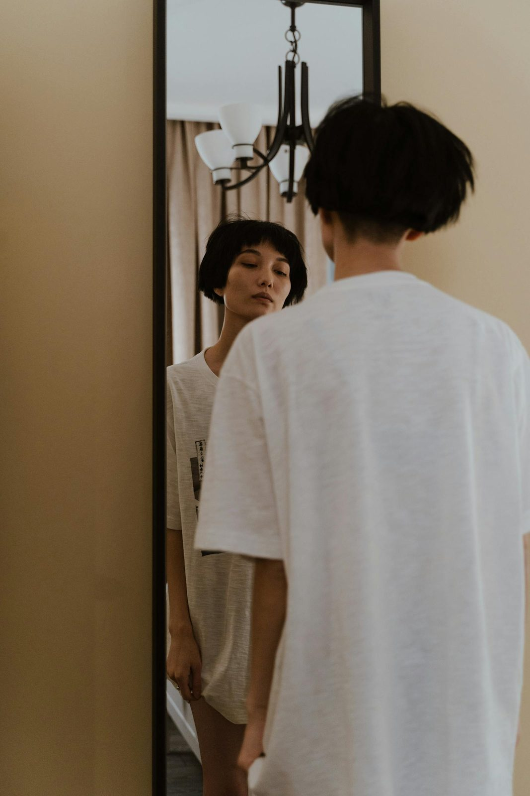
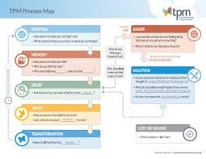
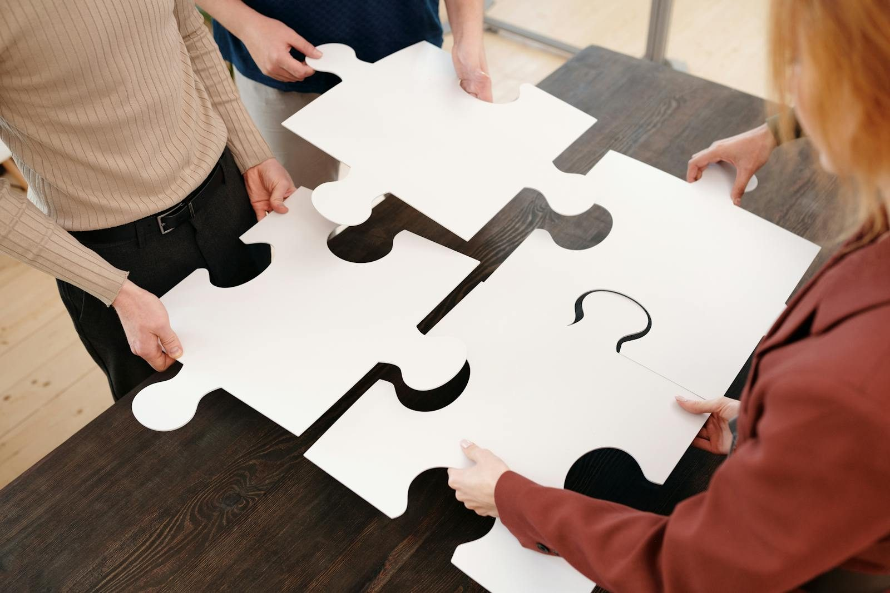
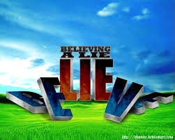
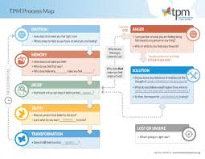
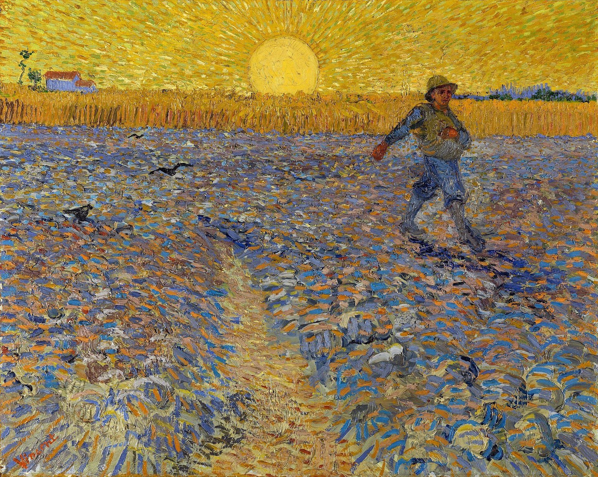
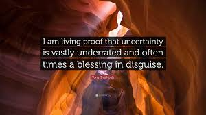

A1 — Faith comes by hearing NEW PROPOSAL
Vol 1 · Exploration 1 — How to Get Faith · current image-007.jpeg
You noted: the ear/hearing is the point (Rom 10:17). Swapped the arms-raised shot for an ear.
Current (JUPITER watermark)
Proposed — free (Pexels)

SWAP → a close-up ear (hearing)
A2 — “Euclid’s Axioms” banner DECIDED · REMOVE
Vol 1 · What We Are Being Formed For · image-013.jpeg (Mathigon brand)
Current
Action
A3 — Connecting with Self NEW PROPOSAL
Vol 2 · Exploration 5 — Four Connects · current image-004.png
You wanted a face in a mirror / looking at oneself. Here’s a modest, clothed reflection shot.
Current (jupiterimages watermark)

Proposed — free (Pexels)

SWAP → a person looking at their own reflection in a mirror
A4 — Four Connects / pieces coming together NEW PROPOSAL
Vol 2 · Exploration 5 — Four Connects · current image-009.jpeg
You wanted pieces being fit together. Here are hands bringing the pieces together.
Current (gettyimages watermark)

Proposed — free (Pexels)

SWAP → pieces being joined together
A5 — “Believing a Lie” 3D text DECIDED · REMOVE
Vol 2 · Exploration 10 — Training Plan · image-008.jpeg (deviantArt)
Current

Action
A6 — Book cover DECIDED · REMOVE
Vol 2 · Introduction — The Bridge · image-012.jpeg (third-party book cover)
Current
Action
A7 — “TPM Process Map” NEEDS YOUR STEER
Vol 2 · Exploration 3 — Believing a Lie · image-006.jpeg
You asked me to find an acceptable TPM map. I found the source — but it’s a copyright issue.
Current (low-res)

Findings / options
Options: (1) you get TPM’s permission and I drop in their official map; (2) link to TPM’s map instead of embedding; (3) keep it removed; (4) we design a generic, non-branded version. I’ve not embedded anything.
A8 — The Sower (must show birds) YOUR CALL
Vol 2 · Exploration 1 — Heart Soil · image-001.jpeg
The current image clearly shows a flock of birds stealing the seed (your point). Van Gogh’s Sower is public-domain and high-res, but its birds are only faint specks — so it doesn’t really make the birds point.
Current — shows birds, but low-res & likely ©
Van Gogh, “The Sower” (PD) — birds faint

OPTIONS → keep current (birds, low-res) · use Van Gogh (PD, faint birds) · or I source a public-domain engraving that shows the birds clearly (it would be a B/W Victorian style)
A9 — Believing a Lie NEEDS YOUR STEER
Vol 2 · Exploration 3 — Believing a Lie · image-002.jpeg
Caravaggio’s Narcissus was too hard to read; a mask search only turned up a Guy-Fawkes/“Anonymous” mask (wrong connotations). “Believing a lie” is hard to image clearly — I’d like your steer on the concept.
Current (low-res illustration)
Concept options
• a cracked / distorted mirror (a false self-image)
• a plain mask (the false face we wear)
• fog / mirage (can’t see what’s true)
• typeset it (no image)
• or just remove
Tell me the concept and I’ll source a clean one.
A10 — Uncertainty quote DECIDED · TYPESET
Introduction · Note on Proof and Certainty · image-003.jpeg
Current (watermarked card)

Proposed — typeset blockquote